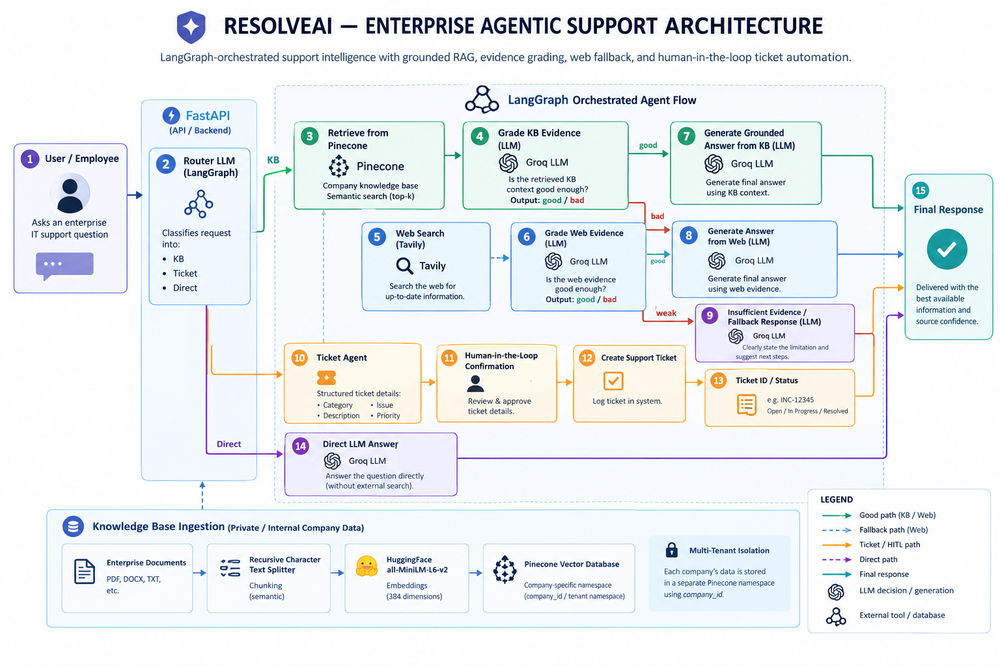

Knowledge-grounded RAG
Retrieves company knowledge from Pinecone using semantic search and evaluates whether retrieved evidence is strong enough to answer.
PROJECT DEEP DIVE · AGENTIC IT SUPPORT
A LangGraph-orchestrated enterprise support copilot with grounded RAG, evidence grading, web fallback, and human-in-the-loop ticket automation.
ResolveAI is an enterprise IT support copilot designed to route employee questions to the right support path: internal knowledge retrieval, direct LLM answers, web research, or structured ticket creation. Its LangGraph-orchestrated workflow evaluates evidence before producing a grounded response and includes a human approval step for ticket creation.
Retrieves company knowledge from Pinecone using semantic search and evaluates whether retrieved evidence is strong enough to answer.
A grading step routes weak knowledge-base evidence to Tavily web search; web evidence is evaluated before generating a response.
Creates structured ticket details, requests human confirmation, then logs the support ticket and returns its ID/status.
The knowledge-base design uses company-specific Pinecone namespaces to separate tenant data.

The architecture emphasizes evidence evaluation, controlled fallback, explicit routing, human oversight for consequential ticket actions, and tenant-aware retrieval. Response quality depends on the quality of indexed company documents and the relevance of retrieved evidence.